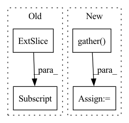

Pattern ID :20837
Before Change
// Filter each sample by its specific repetition
tmp = torch.zeros(num_samples, d, c, device=context.repetition_indices.device)
for i in range(num_samples):
tmp[i, :, :] = samples[i, :, :, context.repetition_indices[i]]
samples = tmp
// If parent index into out_channels are given
if context.parent_indices is not None:After Change
// Index samples to get the correct repetitions
r_idxs = context.indices_repetition.view(-1, 1, 1, 1, 1)
r_idxs = r_idxs.expand(-1, num_channels, num_features, num_leaves, -1)
samples = samples.gather(dim=-1, index=r_idxs)
samples = samples.squeeze(-1)
// If parent index into out_channels are given
if context.indices_out is not None:In pattern: SUPERPATTERN
Frequency: 5
Non-data size: 4
Instances Fragment ID: 67215073
Project Name: braun-steven/simple-einet
Commit Name: e657fc668bd0f87f5e622a8b2549cd9e8ade437a
Time: 2022-01-11
Author: steven.lang.mz@gmail.com
File Name: simple_einet/distributions.py
M Class Name: AnonimousClass
N Class Name: AnonimousClass
M Method Name: dist_sample(2)
N Method Name: dist_sample(2)
M Parent Class:
N Parent Class:
M File Name: simple_einet/distributions.py
N File Name: simple_einet/distributions.py
M Start Line: 98
M End Line: 104
N Start Line: 90
N End Line: 109
Before Change
lam = 1 - ((bbx2 - bbx1) * (bby2 - bby1) / (x.shape[3] * x.shape[2]))
if get_backend() == "tensoflow":
bbx1, bby1, bbx2, bby2 = self.rand_bbox(x.shape[2], x.shape[1], lam)
x[:, bbx1:bbx2, bby1:bby2, :] = x[index, bbx1:bbx2, bby1:bby2,:]
// adjust lambda to exactly match pixel ratio
lam = 1 - ((bbx2 - bbx1) * (bby2 - bby1) / (x.shape[2] * x.shape[1]))
After Change
elif get_backend() == "tensorflow":
y1 = tf.gather(y,index)
x1= tf.gather( x,index)
y_a, y_b = y, y1
bbx1, bby1, bbx2, bby2 = self.rand_bbox(x.shape[2], x.shape[1], lam)
filter=np.zeros(int_shape(x))
filter[:, bbx1:bbx2, bby1:bby2, :] =1
filter=to_tensor(x)
x= x*(1-filter)+x1*filter
//x[:, bbx1:bbx2, bby1:bby2, :] = x1[:, bbx1:bbx2, bby1:bby2,:]
// adjust lambda to exactly match pixel ratio
lam = 1 - ((bbx2 - bbx1) * (bby2 - bby1) / (x.shape[2] * x.shape[1])) Fragment ID: 67215072
Project Name: allanyiin/trident
Commit Name: 17aaa8a3e211962b6b025bde62941b36ff2211d0
Time: 2020-05-20
Author: allan@asiaminer.com.tw
File Name: trident/callbacks/regularization_callbacks.py
M Class Name: CutMixCallback
N Class Name: CutMixCallback
M Method Name: on_loss_calculation_end(2)
N Method Name: on_loss_calculation_end(2)
M Parent Class: RegularizationCallbacksBase
N Parent Class: RegularizationCallbacksBase
M File Name: trident/callbacks/regularization_callbacks.py
N File Name: trident/callbacks/regularization_callbacks.py
M Start Line: 146
M End Line: 189
N Start Line: 151
N End Line: 193
Before Change
self.knn_t,
)
num = images.size()
top1 = (pred_labels[:, 0] == targets).float().sum()
return (num, top1)
def validation_epoch_end(self, outputs):After Change
if dist.is_initialized() and dist.get_world_size() > 0:
// gather predictions and targets from all processes
predicted_labels = torch.cat(dist.gather(predicted_labels), 0)
targets = torch.cat(dist.gather( targets) , 0)
self._val_predicted_labels.append(predicted_labels.cpu())
self._val_targets.append(targets.cpu()) Fragment ID: 67215076
Project Name: lightly-ai/lightly
Commit Name: 000ebaa81361959c8cf9e4075f5c3e393df41a93
Time: 2023-04-12
Author: 43336610+guarin@users.noreply.github.com
File Name: lightly/utils/benchmarking.py
M Class Name: BenchmarkModule
N Class Name: BenchmarkModule
M Method Name: validation_step(3)
N Method Name: validation_step(3)
M Parent Class: LightningModule
N Parent Class: LightningModule
M File Name: lightly/utils/benchmarking.py
N File Name: lightly/utils/benchmarking.py
M Start Line: 197
M End Line: 211
N Start Line: 203
N End Line: 221
Before Change
_output = self._model.pool(feats)
_output = self._model.flatten(_output)
_output = self._model.classifier(_output)
grad: torch.FloatTensor = list(torch.autograd.grad(_output[:, _class] , feats))[0] // (N,C,H,W)
feats.requires_grad_(False)
weights: torch.FloatTensor = grad.mean(axis=-1, keepdim=True).mean(axis=-1, keepdim=True) // (N,C,1,1)After Change
_output: torch.FloatTensor = self._model.pool(feats)
_output: torch.FloatTensor = self._model.flatten(_output)
_output: torch.FloatTensor = self._model.classifier(_output)
_output: torch.FloatTensor = _output.gather(dim=1, index=_class.unsqueeze(1)) .sum()
grad: torch.FloatTensor = torch.autograd.grad(_output, feats)[0] // (N,C,H,W)
feats.requires_grad_(False)
weights: torch.FloatTensor = grad.mean(dim=-2, keepdim=True).mean(dim=-1, keepdim=True) // (N,C,1,1)
heatmap: torch.FloatTensor = (feats * weights).sum(dim=1).clamp(0) // (N,H,W)
heatmap.sub_(heatmap.min(dim=-2, keepdim=True)[0].min(dim=-1, keepdim=True)[0])
heatmap.div_(heatmap.max(dim=-2, keepdim=True)[0].max(dim=-1, keepdim=True)[0])
heatmap = (to_numpy(heatmap).transpose(1, 2, 0) * 255).astype(np.uint8)
heatmap = cv2.resize(heatmap, dsize=_input.shape[-2:], interpolation=cv2.INTER_CUBIC)
if len(heatmap.shape) == 2: Fragment ID: 67215078
Project Name: ain-soph/trojanzoo
Commit Name: 2bf7c2a2e8acba2592ee17d60d1a59b7bd1bbfe5
Time: 2020-11-24
Author: ain-soph@live.com
File Name: trojanzoo/model/imagemodel.py
M Class Name: ImageModel
N Class Name: ImageModel
M Method Name: grad_cam(3)
N Method Name: grad_cam(3)
M Parent Class: Model
N Parent Class: Model
M File Name: trojanzoo/model/imagemodel.py
N File Name: trojanzoo/model/imagemodel.py
M Start Line: 206
M End Line: 222
N Start Line: 190
N End Line: 212
Before Change
// Filter each sample by its specific repetition
tmp = torch.zeros(num_samples, d, c, device=context.repetition_indices.device)
for i in range(num_samples):
tmp[i, :, :] = samples[i, :, :, context.repetition_indices[i]]
samples = tmp
// If parent index into out_channels are givenAfter Change
r_idxs = context.indices_repetition.view(-1, 1, 1, 1, 1)
r_idxs = r_idxs.expand(-1, height, width, num_leaves, -1)
samples = samples.gather(dim=-1, index=r_idxs)
samples = samples.squeeze(-1)
// If parent index into num_leaves are given
if context.indices_out is not None: Fragment ID: 67215096
Project Name: braun-steven/simple-einet
Commit Name: 6c0a0ca7de9dfbed9f4b0eebd0e015cf76002c2b
Time: 2022-01-05
Author: steven.lang.mz@gmail.com
File Name: simple_einet/distributions.py
M Class Name: AnonimousClass
N Class Name: AnonimousClass
M Method Name: dist_sample(2)
N Method Name: dist_sample(2)
M Parent Class:
N Parent Class:
M File Name: simple_einet/distributions.py
N File Name: simple_einet/distributions.py
M Start Line: 94
M End Line: 104
N Start Line: 86
N End Line: 106